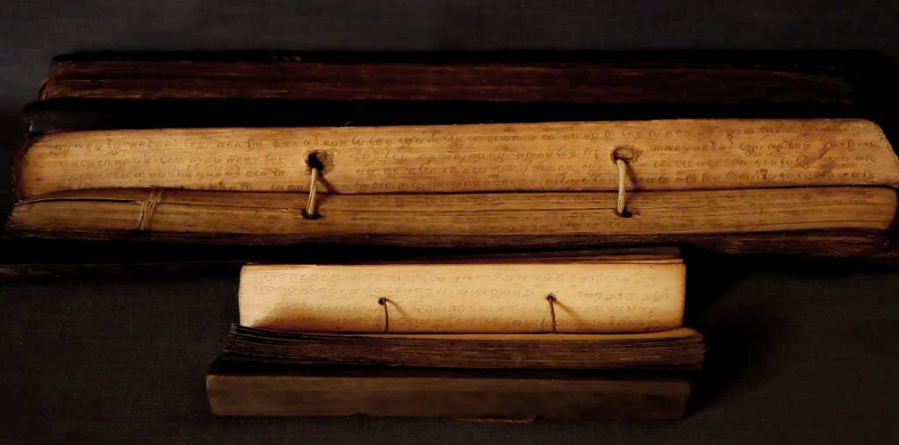
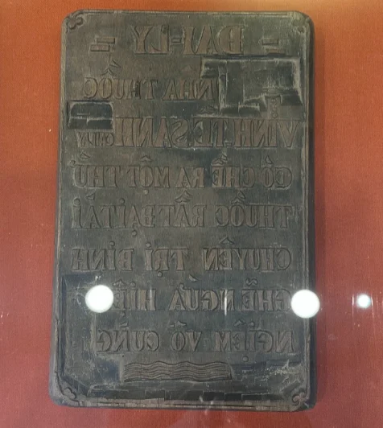
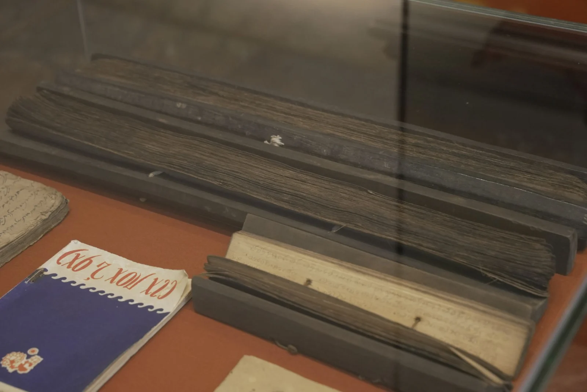
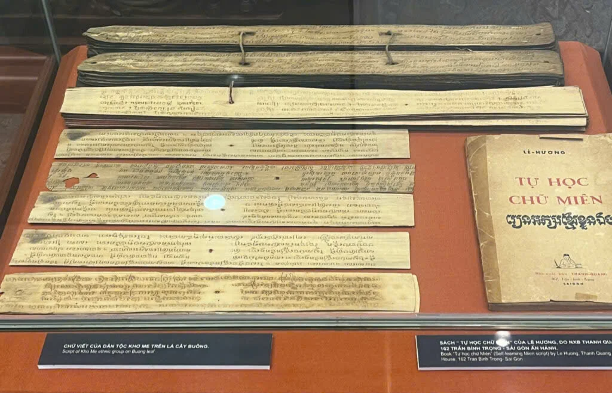
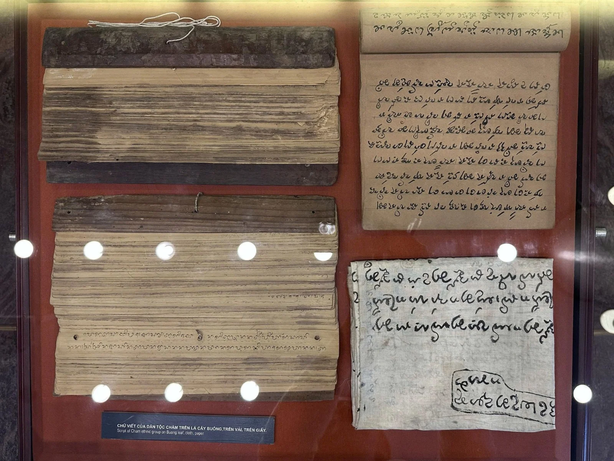
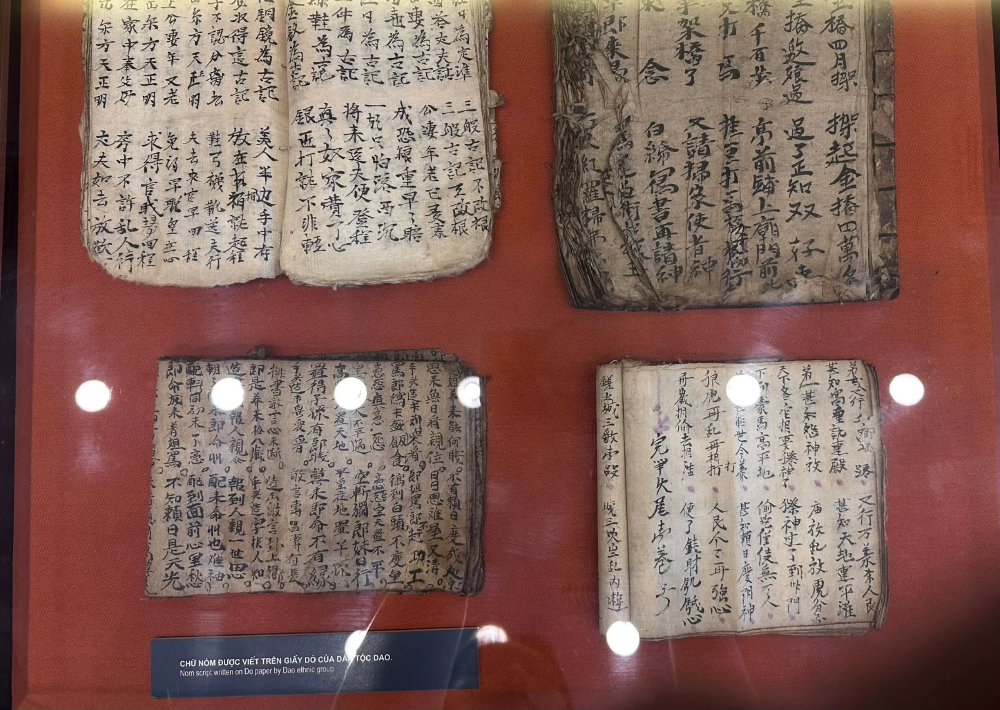

Trong bài
Trước khi giấy trở thành chất liệu phổ biến để lưu giữ tri thức, nhiều cộng đồng dân tộc ở Việt Nam đã sáng tạo những cách thức riêng để bảo tồn chữ viết của dân tộc. Từ lá cây Pơ-lang, lá buông đến ván gỗ, giấy dó hay vải, mỗi chất liệu đều gắn với một kỹ thuật chế tác và phản ánh đời sống văn hóa riêng. Qua những trang sách, tấm lá và nét chữ, lịch sử văn học - chữ viết Việt Nam hiện lên phong phú, đa dạng và giàu bản sắc.
Chất liệu vượt qua dòng thời gian
Chữ viết ra đời không chỉ để ghi lại lời nói mà còn giúp con người lưu giữ ký ức, tri thức và những giá trị tinh thần qua nhiều thế hệ. Để một nét chữ tồn tại lâu dài, con người cần tìm được những chất liệu phù hợp với điều kiện tự nhiên, tập quán sinh hoạt và trình độ kỹ thuật của từng thời kỳ.
Trong lịch sử Việt Nam, sự đa dạng về cộng đồng các dân tộc đã tạo nên một bức tranh đặc biệt phong phú về vật liệu dùng để ghi chép. Nếu chữ Hán, chữ Nôm thường được biết đến qua các văn bản trên giấy dó, ván gỗ thì ở nhiều cộng đồng dân tộc thiểu số, lá cây, vải và những nguyên liệu có sẵn trong tự nhiên lại trở thành chất liệu để lưu giữ kinh sách, nghi lễ và kiến thức cổ truyền.
Ván gỗ có độ chắc chắn, phù hợp với việc khắc chữ và in ấn. Giấy dó mỏng, nhẹ nhưng bền, có khả năng tồn tại lâu dài khi được bảo quản tốt. Vải thuận tiện trong việc lưu giữ và di chuyển. Trong khi đó, lá cây Pơ lang và lá buông là những chất liệu tự nhiên đặc biệt, được con người xử lý bằng nhiều phương pháp công phu để tạo thành những trang sách có khả năng lưu truyền qua nhiều thế hệ.
Sách lá – những trang sách đặc biệt của các dân tộc Việt Nam
Sách lá được chế tác từ lá Buông (đối với người Chăm, Khmer) và lá Pơ-lang (đối với người Thái). Với các cộng đồng này, sách lá không chỉ là phương tiện lưu truyền chữ viết mà còn là “ký ức sống” của tôn giáo, lịch sử và đời sống tinh thần được gìn giữ qua nhiều thế kỷ.

Quy trình làm sách lá đòi hỏi sự công phu và tỉ mỉ. Lá sau khi được tuyển chọn sẽ trải qua các công đoạn xử lý như phơi sương, hong khô, ép phẳng để tăng độ bền và chống mối mọt. Người xưa dùng kim hoặc vật nhọn nung nóng để khắc chữ lên bề mặt lá, sau đó bôi mực, mật cá hoặc nhựa cây để làm nổi nét chữ.
Các lá được xâu lại thành tập, kẹp giữa hai thanh gỗ hoặc bảo quản trong điều kiện đặc biệt như treo trên gác bếp (với người Thái) hay cất trong hòm, bọc vải (với người Chăm, Khmer).
Nội dung ghi chép trong sách lá thường là kinh điển, giới luật Phật giáo, các tri thức thiêng liêng, nghi lễ và tín ngưỡng truyền thống. Vì vậy, việc sáng tạo sách lá thường diễn ra trong không gian tôn giáo.
Chữ Hán trên ván gỗ và giấy dó
Chữ Hán từng được sử dụng rộng rãi trong hành chính, giáo dục, tôn giáo và sáng tác văn chương. Người Việt đã phát triển nhiều phương thức ghi chép và nhân bản văn bản, nổi bật là khắc chữ trên ván gỗ và viết, in trên giấy dó.
Ván gỗ được lựa chọn và xử lý cẩn thận trước khi người thợ tiến hành khắc chữ ngược lên bề mặt. Sau khi hoàn thành, bản khắc có thể được phủ mực rồi in nhiều lần trên giấy, giúp văn bản được nhân bản và truyền bá rộng rãi hơn. Đây là một phương pháp lưu truyền sách vở, văn chương và các tài liệu cổ.

Con người sử dụng bản khắc gỗ để tạo bản in và dùng giấy dó để in chữ từ ván gỗ. Được làm từ nguyên liệu thực vật bằng kỹ thuật thủ công, giấy dó có đặc tính nhẹ và tương đối bền. Ván gỗ và giấy dó
Chữ viết của người Thái trên lá Pơ lang
Đối với một bộ phận cộng đồng người Thái, lá Pơ lang là chất liệu được sử dụng để tạo nên những bộ sách cổ. Để có thể tồn tại trong thời gian dài, lá không được sử dụng ngay sau khi hái. Người làm sách phải trải qua nhiều công đoạn như lựa chọn những chiếc lá phù hợp, phơi sương, hong khô và ép phẳng. Những thao tác tưởng chừng đơn giản nhưng đòi hỏi kinh nghiệm để lá vừa giữ được độ dai, vừa hạn chế mục nát hay bị côn trùng phá hoại.

Sau khi hoàn thiện phần lá, người viết sử dụng kim hoặc dụng cụ nhọn để tạo chữ trên bề mặt. Những đường khắc sau đó được làm nổi bằng các chất liệu tạo màu thích hợp. Nhờ vậy, từng nét chữ hiện lên rõ ràng trên lá.
Một nét đáng chú ý trong cách bảo quản sách lá của người Thái là treo sách trên gác bếp. Khói ở bếp góp phần hạn chế độ ẩm và côn trùng, giúp những trang lá tồn tại lâu hơn. Qua đó có thể thấy việc lưu giữ chữ viết không tách rời khỏi kinh nghiệm sống và tri thức dân gian của cộng đồng.
Chữ viết của người Chăm và Khmer trên lá buông
Đối với người Chăm và Khmer, lá buông là một chất liệu quen thuộc để chế tác sách lá.
Lá buông có cấu tạo phù hợp để xử lý thành những dải lá dài, tương đối phẳng, có thể khắc chữ và xâu thành tập. Sau khi được lựa chọn kỹ, lá phải trải qua nhiều bước xử lý nhằm tăng độ bền trước khi trở thành bề mặt ghi chép.
Kỹ thuật tạo chữ trên lá buông khác với cách viết bằng bút và mực trên giấy. Người xưa thường dùng kim hoặc một dụng cụ có đầu nhọn để rạch, khắc từng nét chữ vào bề mặt lá. Một số dụng cụ có thể được nung nóng để thao tác thuận lợi hơn. Sau đó, những chất tạo màu như mực, nhựa cây hoặc các vật liệu truyền thống khác được bôi lên bề mặt rồi lau đi. Phần màu còn lại trong các rãnh khắc giúp chữ hiện lên rõ nét.

Đối với người Khmer, sách lá thường gắn chặt với đời sống Phật giáo. Nhiều nội dung liên quan đến kinh điển, giáo lý, giới luật và nghi lễ được lưu giữ bằng hình thức này. Vì thế, hoạt động tạo tác, sao chép và gìn giữ sách lá thường diễn ra trong những không gian tôn giáo và gắn với những người có kiến thức về chữ viết, kinh sách.
Trong văn hóa Chăm, chữ viết trên lá cây cũng góp phần lưu giữ nhiều lớp tri thức về tín ngưỡng, nghi lễ và đời sống tinh thần. Ngoài lá Buông, chữ Chăm còn được thể hiện trên vải. Sự đa dạng về vật liệu cho thấy chữ viết đã hiện diện trong nhiều không gian sinh hoạt khác nhau và được cộng đồng gìn giữ bằng những phương thức linh hoạt.

Chữ Nôm của người Dao, Tày trên giấy dó
Đối với người Dao và người Tày, các văn bản chữ Nôm được viết trên giấy dó là những tư liệu quý, phản ánh đời sống ngôn ngữ và văn hóa của cộng đồng.

Những tài liệu như vậy đặc biệt có ý nghĩa đối với việc nghiên cứu lịch sử văn học và ngôn ngữ các dân tộc. Bởi phía sau mỗi trang giấy là cả một quá trình giao lưu văn hóa, sáng tạo chữ viết và gìn giữ bản sắc.
Chữ dân tộc Chăm trên vải
Một điểm đáng chú ý khác là chữ Chăm không chỉ xuất hiện trên lá cây mà còn được ghi trên vải. Vải mềm, có thể cuộn, gấp và di chuyển thuận tiện. Sự xuất hiện của chữ viết trên vải một lần nữa cho thấy khả năng sáng tạo của các cộng đồng dân tộc trong việc lựa chọn chất liệu để lưu truyền chữ viết.
Hiện tại Bảo tàng Văn học Việt Nam trưng bày ba bộ sách lá của người Thái, Chăm, Khơme, góp phần làm phong phú bức tranh di sản văn học – chữ viết Việt Nam, đồng thời khẳng định mối liên hệ văn hóa sâu sắc giữa Việt Nam và khu vực Đông Nam Á.
Bảo tàng Văn học Việt Nam